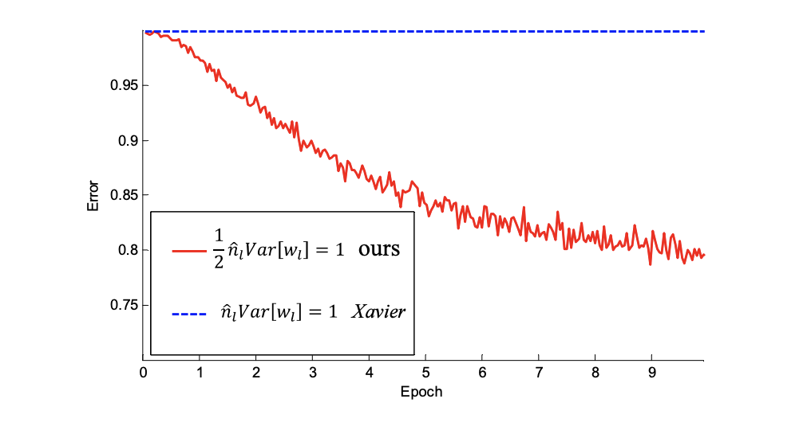

Data normalization and weights initialization¶
from IPython.display import IFrame
IFrame(src="https://cdnapisec.kaltura.com/p/2356971/sp/235697100/embedIframeJs/uiconf_id/41416911/partner_id/2356971?iframeembed=true&playerId=kaltura_player&entry_id=1_01dyptyu&flashvars[streamerType]=auto&flashvars[localizationCode]=en&flashvars[leadWithHTML5]=true&flashvars[sideBarContainer.plugin]=true&flashvars[sideBarContainer.position]=left&flashvars[sideBarContainer.clickToClose]=true&flashvars[chapters.plugin]=true&flashvars[chapters.layout]=vertical&flashvars[chapters.thumbnailRotator]=false&flashvars[streamSelector.plugin]=true&flashvars[EmbedPlayer.SpinnerTarget]=videoHolder&flashvars[dualScreen.plugin]=true&flashvars[hotspots.plugin]=1&flashvars[Kaltura.addCrossoriginToIframe]=true&&wid=1_ri00enil" ,width='800', height='500')
Data normalization in DNNs and CNNs¶
Normalization for input data of DNNs¶
Consider that we have the all training data as
for \(x_{i} \in \mathbb{R}^{d}\) and \(y_{i} \in \mathbb{R}^{k}\).
Before we input every data into a DNN model, we will apply the following normalization for all data \(x_{i}\) for each component. Let denote
Then we have following formula of for all \(j=1,2, \cdots, d\)
where
Here \(x \sim X\) means that \(x\) is a discrete random variable on \(X\) with probability
for any \(x_{i} \in X\).
For simplicity, we rewrite the element-wise definition above as the following compact form
where
defined as before and all operations in (42) are element-wise.
Here we note that, by normalizing the data set, we have the next properties for new data \(\tilde{x} \in \tilde{X}\) with component \(j=1,2, \cdots, d\),
and
Finally, we will have a “new” data set
with unchanged label set \(Y\). For the next sections, without special notices, we use \(X\) data set as the normalized one as default.
Data normalization for images in CNNs¶
For images, consider we have a color image data set \((X, Y):=\left\{\left(x_{i}, y_{i}\right)\right\}_{i=1}^{N}\) where
We further denote these the \((s, t)\) pixel value for data \(x_{i}\) at channel \(j\) as:
where \(1 \leq i \leq N, 1 \leq j \leq 3,1 \leq s \leq m\), and \(1 \leq j \leq n .\)
Then, the normalization for \(x_{i}\) is defined by
where
Here
and
In batch normalization, we confirmed with Lian by both numerical test and code checking that \(\mathrm{BN}\) also use the above formula to compute the variance in \(\mathrm{CNN}\) for each channel.
Another way to compute the variance over each channel is to compute the standard deviation on each channel for every data, and then average them in the data direction.
where
Comparison of \(\sqrt{\left[\sigma_{X}\right]_{j}}\) and \(\sqrt{\left[\tilde{\sigma}_{X}\right]_{j}}\) on CIFAR10.¶
They share the same \(\mu_{X}\) as $\(\mu_{X}=\left(\begin{array}{lll} 0.49140105 & 0.48215663 & 0.44653168 \end{array}\right)\)\( But they had different standard deviation estimates: \)\(\begin{aligned} &\sqrt{\left[\sigma_{X}\right]_{j}}=(0.247032840 .243484990 .26158834) \\ &\sqrt{\left[\tilde{\sigma}_{X}\right]_{j}}=(0.202201930 .199316350 .20086373) \end{aligned}\)$
##Initialization for deep neural networks
Xavier’s Initialization¶
The goal of Xavier initialization [1] is to initialize the deep neural network to avoid gradient vanishing or blowup when the input is white noise.
Let us denote the DNN models as:
with \(x \in \mathbb{R}^{n_{0}}\) and \(f^{\ell} \in \mathbb{R}^{n_{\ell}}\). More precisely, we have
The basic assumptions that we make are:
The initial weights \(W_{i j}^{\ell}\) are i.i.d symmetric random variables with mean 0, namely the probability density function of \(W_{i j}^{\ell}\) is even.
The initial bias \(b^{\ell}=0\).
Now we choose the variance of the initial weights to ensure that the features \(f^{L}\) and gradients don’t blow up or vanish. To this end we have the following lemma.
Lemma 1. Under the previous assumptions \(f_{i}^{\ell}\) is a symmetric random variable with \(\mathbb{E}\left[f^{\ell}\right]=0 .\) Moreover, we have the following identity $\(\mathbb{E}\left[\left(f_{i}^{\ell}\right)^{2}\right]=\sum_{k} \mathbb{E}\left[\left(W_{i k}^{\ell}\right)^{2}\right] \mathbb{E}\left[\sigma\left(f_{k}^{\ell-1}\right)^{2}\right]\)\( Now, if \)\sigma=i d\(, we can prove by induction from \)\ell=1$ that
We make this assumption that \(\sigma=i d\), which is pretty reasonably since most activation functions in use at the time (such as the hyperbolic tangent) were close to the identity near 0 .
Now, if we set
we will obtain
Thus, in pure DNN models, it is enough to just control \(\sum_{k} \mathbb{E}\left[\left([x]_{k}\right)^{2}\right] .\)
A similar analysis of the propagation of the gradient \(\left(\frac{\partial L(\theta)}{\partial f^{t}}\right)\) suggests that we set
Thus, the Xavier’s initialization suggests to initialize \(W_{i k}^{\ell}\) with variance as:
To control \(\mathbb{V}\left[f_{i}^{\ell}\right]:\)
To control \(\mathbb{V}\left[\frac{\partial L(\theta)}{\partial f_{i}^{l}}\right]:\)
Trade-off to control \(\mathbb{V}\left[\frac{\partial L(\theta)}{\partial W_{i k}^{l}}\right]:\)
Here we note that, this analysis works for all symmetric type distribution around zero, but we often just choose uniform distribution \(\mathcal{U}(-a, a)\) and normal distribution \(\mathcal{N}\left(0, s^{2}\right) .\) Thus, the final version of Xavier’s initialization takes the trade-off type as
or
Kaiming’s initialization¶
In [2], Kaiming He and others extended this analysis to get an exact result when the activation function is the ReLU.
We first have the following lemma for symmetric distribution.
Lemma 2. If \(X_{i} \in \mathbb{R}\) for \(i=1:\) n are i.i.d with symmetric probability density function \(p(x)\), i.e. \(p(x)\) is even. Then for any nonzero random vector \(Y=\left(Y_{1}, Y_{2}, \cdots, Y_{n}\right) \in \mathbb{R}^{n}\) which is independent with \(X_{i}\), the following random variable
is also symmetric.
Then state the following result for ReLU function and random variable with symmetric distribution around 0 .
Lemma 3. If \(X\) is a random variable on \(\mathbb{R}\) with symmetric probability density \(p(x)\) around zero, i.e., $\(p(x)=p(-x)\)\( Then we have \)\mathbb{E} X=0$ and
Based on the previous Lemma 1, we know that \(f_{k}^{\ell-1}\) is a symmetric distribution around 0 . The most important observation in Kaiming’s paper is that:
if \(\sigma=\) ReLU. Thus, Kaiming’s initialization suggests to take:
For the first layer \(\ell=1\), by definition
there is no ReLU, thus it should be \(\mathbb{V}\left[W_{i k}^{1}\right]=\frac{1}{d} .\) For simplicity, they still use \(\mathbb{V}\left[W_{i k}^{1}\right]=\) \(\frac{2}{d}\) in the paper. Similarly, an analysis of the propagation of the gradient suggests that we set \(\mathbb{V}\left[W_{i k}^{\ell}\right]=\frac{2}{n_{\ell}}\). However, in paper authors did not suggest to take the trade-off version, they just chose
as default.
Thus, the final version of Kaiming’s initialization takes the forward type as
or
Initialization in CNN models and experiments¶
For CNN models, following the analysis above we have the next iterative scheme in CNNs
where \(f^{\ell, i-1} \in \mathbb{R}^{c_{\ell} \times n_{\ell} \times m_{\ell}}, f^{\ell, i} \in \mathbb{R}^{h_{\ell} \times n_{\ell} \times m_{\ell}}\) and \(K \in \mathbb{R}^{(2 k+1) \times(2 k+1) \times h_{\ell} \times c_{\ell}}\). Thus we have
Take variance on both sides, we will get
thus we have the following initialization strategies: Xavier’s initialization
Kaiming’s initialization
Here we can take this Kaiming’s initialization as:
Double the Xavier’s choice, and get
Then pick \(c_{\ell}\) or \(h_{\ell}\) for final result
And they have the both uniform and normal distribution type.

Fig. The convergence of a 22-layer large model. The \(x\)-axis is the number of training epochs. The y-axis is the top-1 error of 3,000 random val samples, evaluated on the center crop. Use ReLU as the activation for both cases. Both Kaiming’s initialization (red) and “Xavier’s” (blue) lead to convergence, but Kaiming’s initialization starts reducing error earlier.

Fig. The convergence of a 30-layer small model (see the main text). Use ReLU as the activation for both cases. Kaiming’s initialization (red) is able to make it converge. But “Xavier’s” (blue) [1] completely stalls - It is also verified that that its gradients are all diminishing. It does not converge even given more epochs. Given a 22-layer model, in cifar10 the convergence with Kaiming’s initialization is faster than Xavier’s, but both of them are able to converge and the validation accuracies with two different initialization are about the same(error is \(33.82,33.90)\).
With extremely deep model with up to 30 layers, Kaiming’s initialization is able to make the model convergence. On the contrary, Xavier’s method completely stalls the learning.